| material | stima_OK | HV30_NOK | HV30_OK | stima_NOK | HV30_dd | stima_dd |
|---|---|---|---|---|---|---|
| 1 | 591 | 676 | 662 | 620 | 648 | 612 |
| 2 | 205 | 259 | 242 | 212 | 256 | 219 |
| 3 | 209 | 259 | 262 | 217 | 253 | 218 |
| 4 | 262 | 306 | 302 | 307 | 297 | 297 |
| 5 | 318 | 352 | 330 | 339 | 351 | 337 |
| 6 | 578 | 660 | 641 | 629 | 652 | 621 |
| 7 | 206 | 244 | 244 | 216 | 247 | 218 |
| 8 | 156 | 164 | 165 | 157 | 166 | 157 |
| 9 | 624 | 659 | 668 | 622 | 659 | 618 |
| 10 | 581 | 625 | 651 | 596 | 635 | 596 |
1 - Misure di durezza
Tommaso Stefani
2025-10-15
Descrizione dell’esperienza
Descrizione dell’esperienza
L’attività si concentra sulla misurazione della durezza Vickers di materiali metallici utilizzando un durometro da laboratorio.
I dati raccolti saranno utilizzati per due tipi di analisi statistiche:
- Test di Student accoppiato: per verificare l’impatto effettivo di un indentatore danneggiato su eventuali anomalie nelle misure.
- Taratura degli strumenti di misura: sviluppo del modello analitico che lega il valore di stima fornito dal durometro sulla base della sola profondità dell’impronta con la misura reale e relativa regressione.
Il percorso prevede quindi la pianificazione delle misure, l’esecuzione in laboratorio e l’analisi statistica dei dati ottenuti.
Descrizione dell’esperienza
Gli obiettivi si possono riassumere quindi nei seguenti:
Acquisire competenze nella misura della durezza dei materiali.
Valutare la significatività statistica dell’impatto di un indentatore danneggiato sulle misure.
Regredire una caratteristica di taratura che correli la stima fornita dal durometro sulla base della sola profondità di impronta con il valore reale di durezza.
Richiami teorici
Durezza dei materiali
Definizione – Durezza
La durezza è la proprietà meccanica dei materiali che esprime la loro resistenza alla deformazione plastica locale, determinata mediante prove di penetrazione, graffiatura o abrasione.
Essa rappresenta la capacità di un materiale ad opporsi alla formazione di impronte permanenti sotto l’azione di un corpo più duro.
La durezza si valuta a partire dalla misura dell’impronta lasciata da un penetratore sul materiale, con metodi diversi a seconda del tipo di prova adottata.
Le misure di durezza sono relative e dipendono dal metodo e dalle condizioni di prova, perciò è essenziale indicare sempre la sigla della scala utilizzata (es. HV30).
La durezza è una grandezza empirica che dipende da molteplici fattori materiali e di prova, senza una propria unità di misura.
Durezza dei materiali
Alla luce di quanto detto è evidente come non esista un metodo generale di conversione tra le diverse scale di misura della durezza (corrispondenti ai diversi metodi di prova utilizzati) ma solo tentativi di raffronto sperimentali.
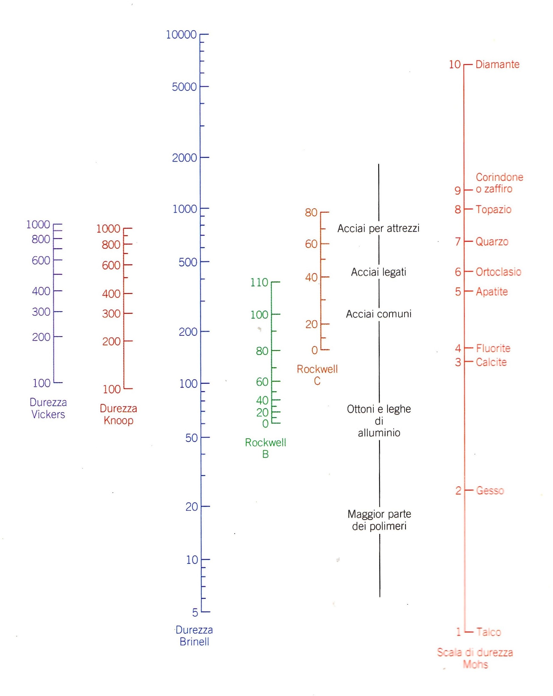
Durezza dei materiali
Le prove di durezza sono molto utilizzate perché:
- Sono semplici e poco costose: richiedono minima preparazione del campione e strumenti economici.
- Sono quasi non distruttive: l’unico effetto sul campione è una piccola impronta.
- Permettono di stimare altre proprietà meccaniche, come la resistenza a rottura (approssimativamente).
Tra le scale di durezza più comuni vi sono: Mohs, Brinell, Rockwell e Vickers. In particolare, la scala Vickers è adottata nelle misure del presente esperimento.
Scala Mohs
Scala Mohs
La scala Mohs è un sistema ideato nel 1812 dal mineralogista tedesco Friedrich Mohs per classificare i materiali in base alla loro durezza, intesa come resistenza alla graffiatura. Si tratta di un metodo empirico e comparativo, che non fornisce un valore numerico assoluto, ma piuttosto consente di stabilire se un materiale è più o meno duro rispetto a un altro.
La scala Mohs classifica la durezza su 10 livelli, da 1 (talco, il più tenero) a 10 (diamante, il più duro); ogni minerale può graffiare solo quelli con durezza inferiore al proprio livello.
La scala Mohs è ancora usata in geologia e mineralogia per identificazioni rapide, ma non è adatta per applicazioni tecniche o industriali, dove sono preferiti metodi che danno risultati quantitativi e ripetibili.
Scala Rockwell
Scala Rockwell
La prova Rockwell è un metodo per misurare la durezza dei materiali basato sulla misura della profondità residua di penetrazione di un penetratore standardizzato, dopo l’applicazione sequenziale di un carico preliminare e uno principale, secondo procedure normalizzate.
La procedura prevede 3 fasi:
- preparazione dei campioni
- Applicazione di un precarico per stabilizzare il contatto;
- Applicazione e successiva rimozione del carico principale, dopo cui si misura la profondità \(h\) dell’impronta residua.
Scala Rockwell
Il valore di durezza Rockwell si calcola mediante la formula:
\[ HR = N - \frac{h}{s} \]
dove:
- \(HR\) è il valore di durezza,
- \(h\) è la profondità residua dell’impronta (mm),
- \(s = 0.002 \, \text{mm}\) è il coefficiente di scala,
- \(N\) è una costante che dipende dalla scala (es. \(N = 100\) per la scala HRC).
Scala Rockwell
Le diverse scale Rockwell si distinguono per:
- tipo di penetratore (cono in diamante o sfera di diverse dimensioni),
- carico appplicato
Per riportare il valore di durezza di un materiale si usa la seguente sigla: \[ HRxx\ yy \]
- \(HR\): prova Rockwell
- \(xx\): scala utilizzata (per es. C)
- \(yy\): valore di durezza rilevato sulla scala C
Scala Rockwell
La prova Rockwell rappresenta un metodo molto semplice e molto utilizzato in quanto non richiede particolari conoscenze da parte dell’operatore. Questo perchè si basa su una misura determinata automaticamente dalla macchina (la profondità dell’impronta).
riferimento normativo: UNI EN ISO 6508-1:2016
Scala Brinell
Scala Brinell
La prova Brinell è un metodo che si basa sulla misura del diametro dell’impronta di penetrazione provocata da una sfera in acciaio o carburo di tungsteno sottoposta a un carico statico. È una prova robusta che può essere applicata ad un ampio intervallo di durezze.
Dopo l’applicazione del carico, si misura il diametro dell’impronta residua. La durezza Brinell si calcola mediante la formula:
\[ HBW = \frac{2P}{\pi D \left( D - \sqrt{D^2 - d^2} \right)} \]
dove:
- \(P\): carico applicato (kgf)
- \(D\): diametro della sfera (mm)
- \(d\): diametro medio dell’impronta (mm)
Scala Brinell
Per riportare il valore di durezza di un materiale si usa la seguente sigla:
\[ HBW\ xx/yy/zz \] dove:
\(HBW\): prova Brinell con sfera in carburo di tungsteno (HB se in acciaio)
\(xx\): diametro della sfera (mm)
\(yy\): carico applicato (kgf)
\(zz\): tempo di applicazione del carico (s)
La prova Brinell si caratterizza per essere una prova robusta che può essere applicata ad un ampio intervallo di durezze.
riferimento normativo: UNI EN ISO 6506-1
Scala Vickers
Scala Vickers
La prova Vickers è un metodo di prova basato sulla misurazione delle dimensioni di un’impronta ottenuta tramite un penetratore piramidale in diamante. Durante la prova, si applica un carico statico definito, mantenuto per un determinato intervallo di tempo. Una volta rimosso il carico, si osserva l’impronta lasciata sulla superficie del campione.
La durezza Vickers si determina misurando le diagonali dell’impronta con un microscopio e calcolando il rapporto tra carico applicato e area dell’impronta secondo la seguente formula:
\[ HV = \frac{1.854 \cdot P}{d^2} \]
dove:
- \(P\) è il carico applicato in kgf
- \(d\) è la lunghezza media delle due diagonali dell’impronta, espressa in millimetri.
Scala Vickers
Essendo una misura ottica, la prova Vickers richiede una preparazione accurata del campione con levigatura e lucidatura per garantire letture precise, ed è ideale per materiali metallici omogenei e microstrutture.
La scala Vickers utilizza un penetratore con geometria fissa, ma il valore HV dipende dal carico applicato; poiché impronta e risposta del materiale variano con la forza, i risultati con carichi diversi non sono sempre confrontabili, soprattutto su materiali eterogenei o trattati superficialmente.
Scala Vickers
Per riportare il valore di durezza di un materiale si usa la seguente sigla:
\[ HV xx/yy \]
dove:
- \(HV\): prova Vickers con penetratore a punta di diamante piramidale
- \(xx\): carico applicato in kgf
- \(yy\): tempo di applicazione del carico in secondi (opzionale, spesso non indicato)
Tutti i dettagli tecnici, i criteri di esecuzione e le tolleranze della prova sono regolati dalla norma UNI EN ISO 6507-1, che rappresenta il riferimento principale per l’applicazione corretta del metodo Vickers.
Scala Vickers
In figura le caratteristiche principali che caratterizzano le prove Brinell e Vickers.
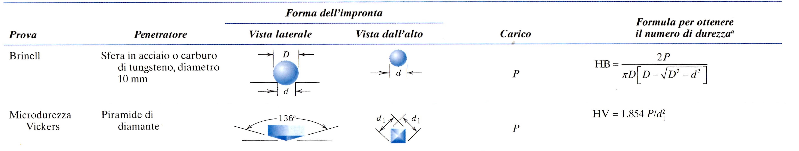
T-test
- Il T-test di Student è un test statistico che serve a confrontare le medie di due gruppi per capire se la differenza osservata sia dovuta al caso o a un effetto reale.
Esistono diverse varianti del t-test:
- ad uno due lati
- ad uno o due campioni
- T-test accoppiato
In questa attività si utilizza il test accoppiato.
T-test
Nel caso di test di Student a due campioni, quando essi hanno la stessa dimensione e sono raccolti due a due in condizioni molto simili, è opportuno accoppiarli e effettuare il test di Student accoppiato.
Ogni misura è esprimibile come: \[ y_{ij}=\mu_i+\beta_j+\varepsilon_{ij};\hspace{9pt} \left\{ \begin{array}{l}i=1,2\\j=1,2,\dots ,n\end{array} \right. \] dove:
- \(i\) identifica il campione
- \(j\) identifica la singola misura di un campione
T-test
Se si definisce \(d_j=y_{1j} - y_{2j}\), ricordando le proprietà dell’operatore \(E(\cdot)\), risulta \(\mu_d = \mu_1 - \mu_2\). Quindi si può formulare la seguente coppia di ipotesi: \[ \begin{eqnarray} H_0 :~& \mu_d = 0 \\ H_1 :~& \mu_d \neq 0 \end{eqnarray} \] Il test accoppiato è quindi evidentemente un test a un campione, con il vantaggio che gli effetti casuali tra coppie di osservazioni non influiscono sul risultato del test
Taratura
Una misura è il risultato di una misurazione che descrive un parametro di un sistema in un certo stato.
Le misurazioni possono essere:
- dirette, se ottenute per confronto con un campione noto
- indirette, se ricavate da grandezze correlate tramite un modello.
Il modello è un insieme di relazioni tra parametri che descrive le interazioni nel sistema e rappresenta lo strumento di misura. Può essere analitico, numerico o empirico; quest’ultimo non include informazioni sulla fisica completa del sistema.
Nel caso di misurazioni indirette, lo strumento si basa su un trasduttore e richiede un modello che ne descriva il comportamento. Se il modello è statico, non considera il tempo; se dinamico, sì. La taratura è il processo di identificazione dei parametri del modello.
Taratura
Taratura
La taratura punta a definire la correlazione \(y=f(m)\) tra l’ingresso misurando \(m\) e l’uscita del trasduttore \(y\), e la relativa incertezza. La \(f(\cdot)\) è detta caratteristica statica dello strumento.
Uno strumento fornisce la misura mediante inversione della caratteristica statica: \(m=f^{-1}(y)\)
Perché la \(f(\cdot)\) sia nota è necessario identificarne i parametri mediante regressione che viene effettuata a partire da una serie di coppie \((m_i,y_i)\) ottenute:
- da una serie di misurandi noti
- da una serie di misurazioni ottenute con uno strumento di qualità migliore di quello in taratura (questo perchè l’incertezza sui parametri della regressione non dipende dall’incertezza su queste misurazioni ma sulla variabilità dei dati raccolti)
Taratura
La taratura statica si sviluppa quindi su quattro passaggi:
- Sviluppo del modello dello strumento: analisi dei principi fisici per definire la caratteristica statica
- Raccolta dei dati di taratura: campagna sperimentale per coppie \((m_i, y_i)\) in ordine casuale
- Regressione: identificazione dei parametri del modello
- Validazione del modello: verifica adeguatezza mediante analisi dei residui
La taratura deve anche definire l’incertezza dello strumento, dovuta al modello (la forma della caratteristica statica), ai parametri del modello e alla stima del misurando (dovuta a ingressi di disturbo).
Parte sperimentale
Attrezzatura necessaria
- 10 campioni di acciai ignoti (composizione non nota, trattamenti subiti non noti, ecc.)
- Carte abrasive: Non sono prescritte grane specifiche nelle normative, ma si consiglia di utilizzare una sequenza di abrasivi da grana 120 a 1200 per garantire una superficie liscia e priva di difetti
- detergente per superfici metalliche
- panno in microfibra o tessuto morbido che non rilasci fibre
- durometro per misurazione durezza VIckers
- penetatore Vickers danneggiato
- penetratore Vickers integro
Fasi da seguire in laboratorio
- Scelta di 10 campioni di acciai ignoti
- Preparazione dei campioni:
- I campioni devono essere accuratamente lucidati per ottenere una superficie liscia e priva di ossidazioni o impurità. Non sono prescritte grane specifiche nelle normative, ma si consiglia di utilizzare una sequenza di abrasivi da grana 120 a 1200. Se possibile lucidare a specchio.
- Pulizia con panno morbido e detergente per metallo per rimuovere polveri o residui.
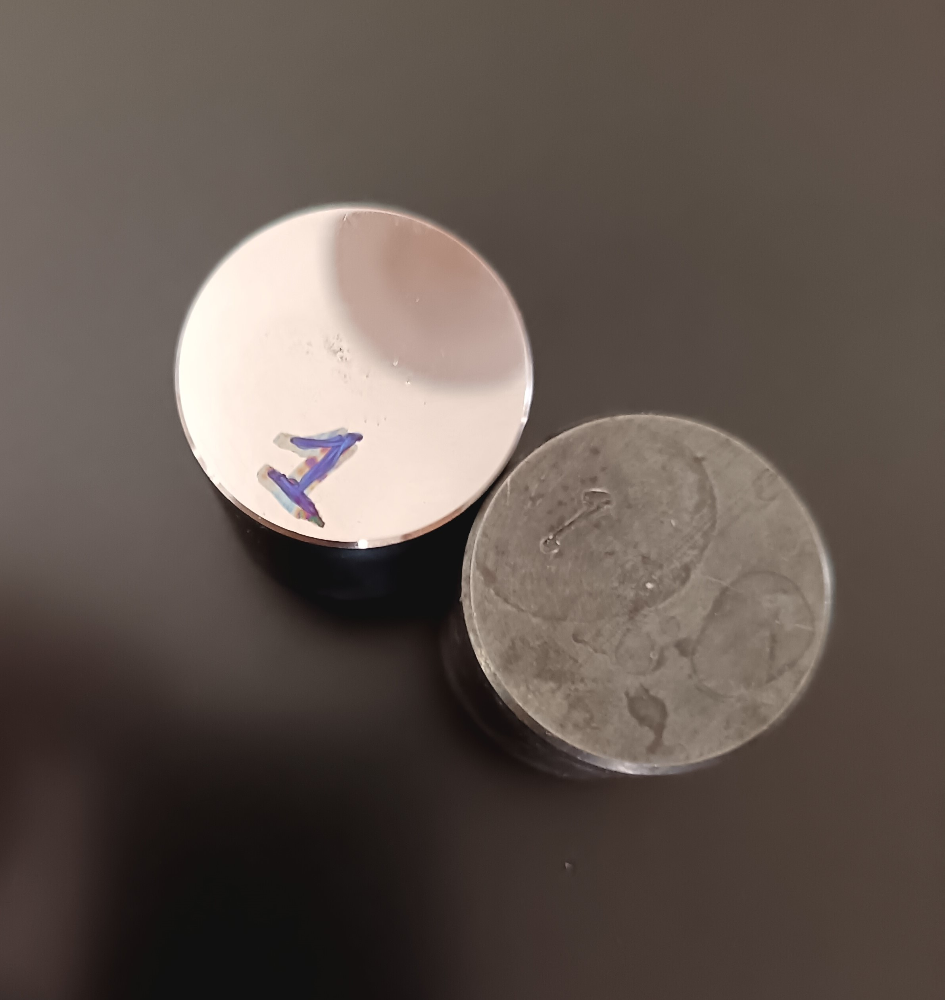
Fasi da seguire in laboratorio
- Numerazione dei campioni: Indentificare i campioni numerandoli da 1 a 10
- Montaggio indentatore Vickers danneggiato sulla macchina
- Esecuzione delle prove previste dalla campagna di misure per l’indentatore danneggiato
- Montaggio indentatore Vickers integro sulla macchina
- Esecuzione delle prove previste dalla campagna di misure per l’indentatore integro
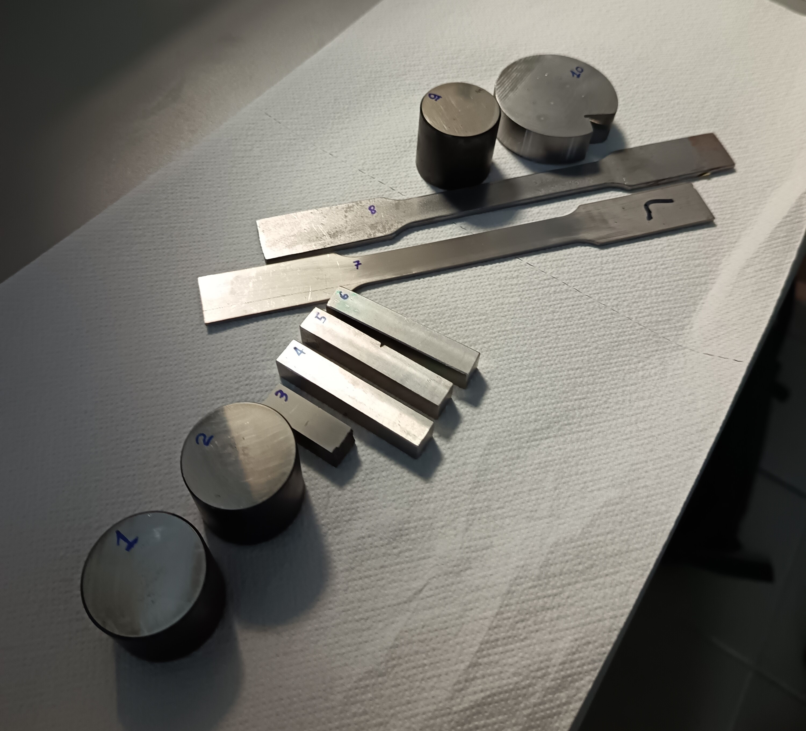
Misurazione
Per eseguire una misura di durezza:
- Poggiare il provino sul piano di supporto della macchina
- Ruotare il volantino portando in adesione il provino con l’elemento di contatto del durometro
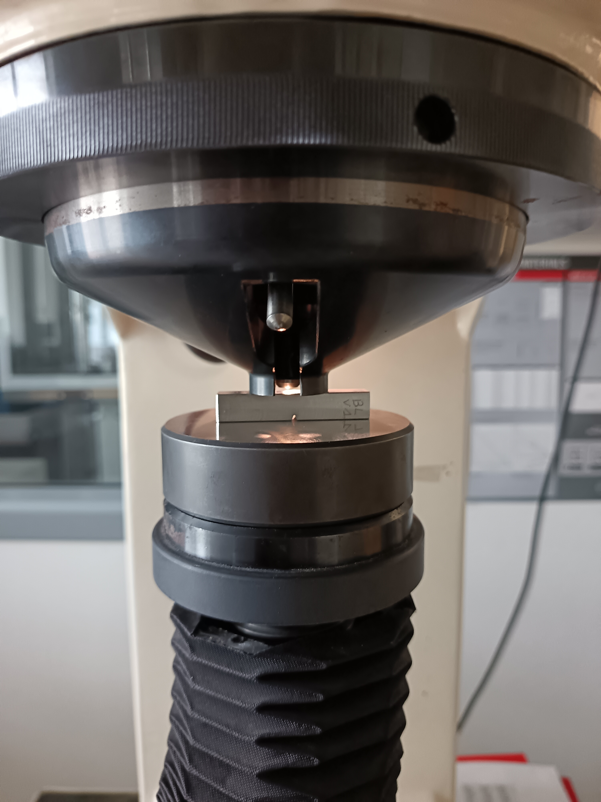
Misurazione
- Premere il tasto \(\begin{array}{c}\downarrow \\ - \\ \uparrow\end{array}\) che avvia il ciclo di misura
- Attendere la fine della prova, quindi che compaia l’immagine dell imnpronta sullo schermo, annotare la stima fornita dalla macchina.
- Azzerare la posizione del regolo portando a contatto i due corsoi del calibro, premere il tasto f (solo per prima misura dopo accensione)
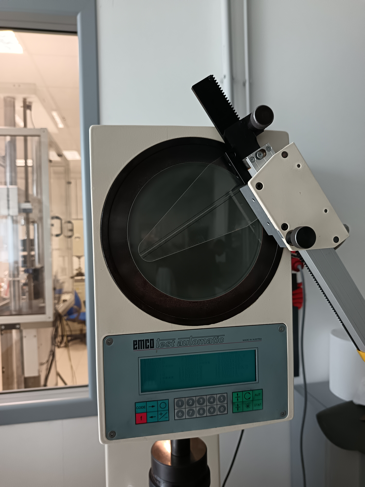
Misurazione
- Allineare la linea presente su uno dei due corsoi con una delle diagonali dell’impronta, in modo da fissare l’orientamento corretto per la misurazione
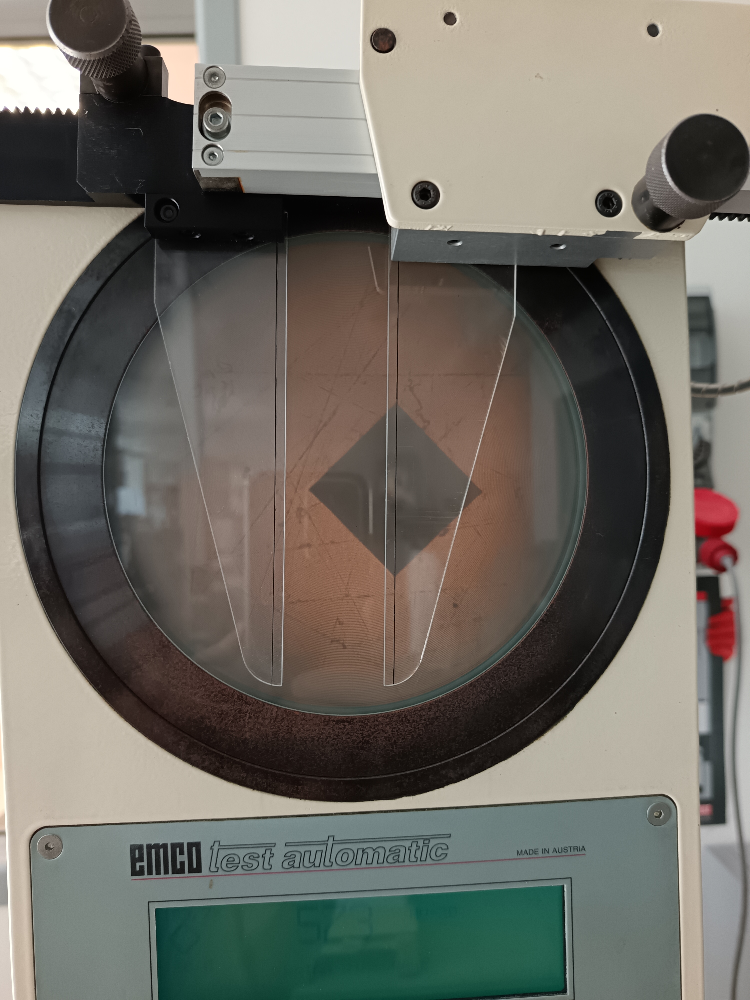
Misurazione
- Mantendendo l’orientamento ottenuto al punto precedente regolare attraverso i due pomelli presenti sul calibro la posizione dei due corsoi, in modo che le linee presenti sugli stessi combacino con i vertici della diagonale opposta a quella usata da riferimento al punto precedente
- Confermare con il tasto f
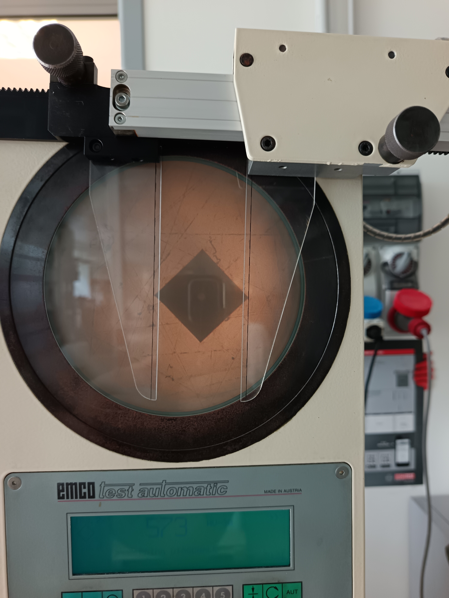
Misurazione
- Ripetere i precedenti punti per l’altra diagonale
- Annotare la misura che compare a display
- Premere il tasto f
Importante
Per le misure che prevedono di usare due volte la stessa diagonale (quella chiaramente visibile dell’indentatore rotto) rilevare due volte la stessa diagonale.
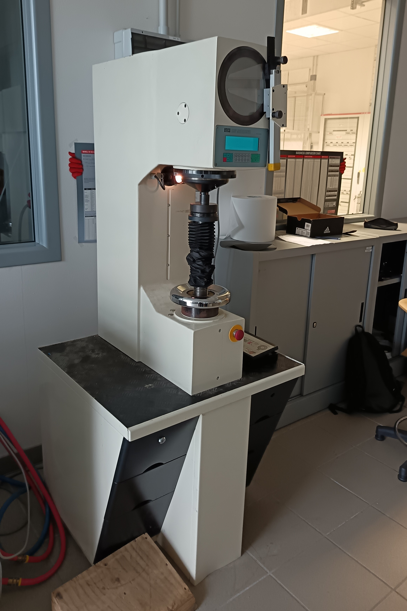
Elaborazione dei dati
Confronto tra intentatore integro e danneggiato
È necessario creare una tabella di raccolta dati, in colonna i valori delle misure e delle stime fornite dalla macchina per tutti i 10 provini usando
- indentatore integro (
HV30_OKestima_OK), - indentatore danneggiato (
HV30_NOKestima_NOK) - due volte la diagonale visibile dell’indentatore danneggiato (
HV30_ddestima_dd).
Si utilizza sempre la scala HV30.
Confronto tra intentatore integro e danneggiato
Confronto tra intentatore integro e danneggiato
Si considerano dapprima i dati relativi alle misure raccolte utilizzando diagonali diverse (le prime 4 colonne della tabella).
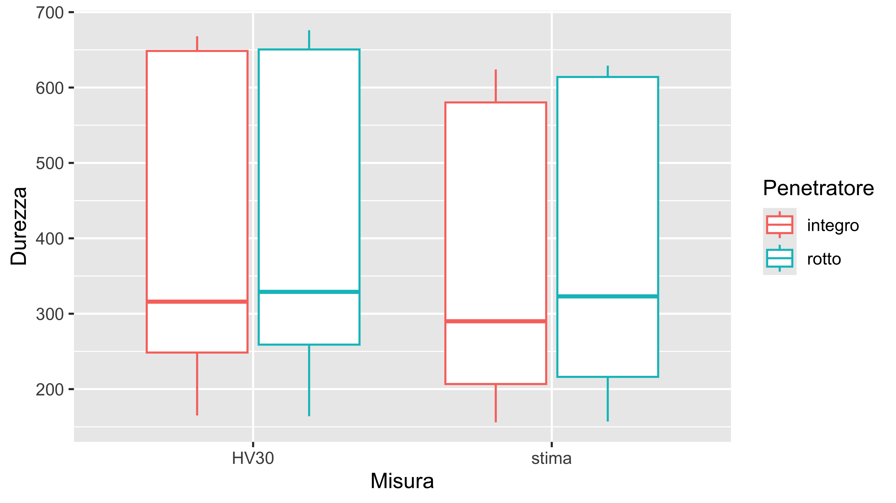
Una volta importati i dati si possono confrontare tutti i dati:
- non si evidenzia alcuna differenza significativa in quanto la variabilità del materiale maschera le differenze tra i penetratori.
Confronto tra intentatore integro e danneggiato
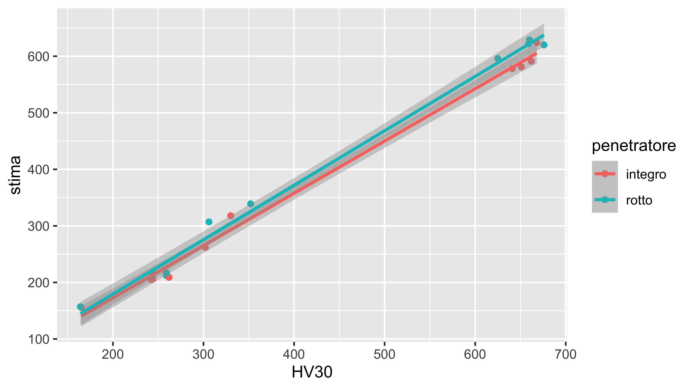
Si osserva la relazione tra stima e durezza, separatamente per penetratore:
- sembrano essere differenti sia l’intercetta che la pendenza.
Confronto tra intentatore integro e danneggiato
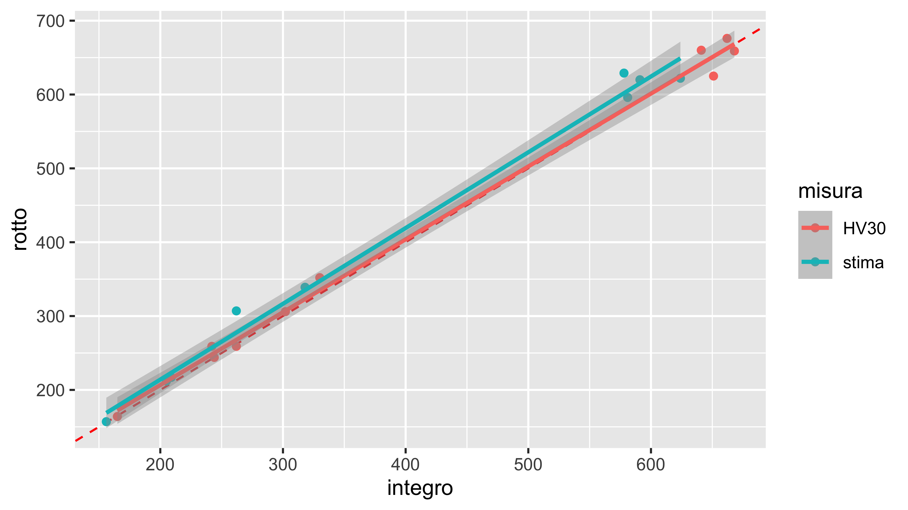
Si osserva la relazione tra le misure fatte con indentatore rotto e indentatore integro:
- se non ci fosse differenza sarebbero allineate sulla retta diagonale con equazione \(y=x\):
- i punti corrispondenti alla misura effettiva HV30 hanno una regressione che corrisponde alla diagonale
- i punti corrispondenti alla stima fornita dalla macchina hanno una regressione che è al di sopra della diagonale e i punti sono consistentemente al di sopra di essa,
- Quanto osservato sta a significare che la stima fornisce una durezza maggiore per l’indentatore rotto che per quello integro.
Confronto tra intentatore integro e danneggiato
Si effettuano i T-test per HV30 e per stima, si ottiene:
| group | estimate | statistic | parameter | conf.low | conf.high | p.value | significant |
|---|---|---|---|---|---|---|---|
| HV30 | -3.7 | -0.790 | 9 | -14.300 | 6.900 | 0.45 | FALSE |
| stima | -18.5 | -3.243 | 9 | -31.404 | -5.596 | 0.01 | TRUE |
Confronto tra intentatore integro e danneggiato
Ciò che si evince è:
Il danno al penetratore viene compensato dalla capacità dell’operatore di estrapolare dal contesto la posizione del vertice mancante nell’impronta. Questa compensazione è però soggettiva e dipende dall’esperienza e capacità dell’operatore.
Viceversa, la misura basata sulla penetrazione è completamente oggettiva e risente quindi della integrità del penetratore: tanto più la geometria reale si discosta dalla geometria nominale per la quale è nota la relazione tra altezza della piramide e area della base, tanto più la misura è errata.
Confronto tra intentatore integro e danneggiato
Si confrontano le misure ottenute con doppia diagonale e quelle con vertice estrapolato da un indentatore danneggiato per stabilire quale sia più affidabile: se il p-value del confronto con la doppia diagonale è maggiore di quello ottenuto dal confronto con quelle ottenute estrapolando la posizione, allora conviene usare due volte la stessa diagonale.
| estimate | statistic | p.value | parameter | conf.low | conf.high | method | alternative |
|---|---|---|---|---|---|---|---|
| 0.3 | 0.0758987 | 0.9411601 | 9 | -8.641484 | 9.241484 | Paired t-test | two.sided |
Quindi, se si ha a disposizione solo l’indentatore danneggiato, è preferibile utilizzare due volte la stessa diagonale. Ovviamente, questa conclusione è valida solo per l’indentatore e per il campo di applicazione specifico considerato.
Si sottolinea che (non si è riportata l’analisi) è necessario verificare le ipotesi che stanno alla base del T test accoppiato
Analisi per taratura
È necessario creare una tabella di raccolta dati. Si sceglie di indagare per 6 materiali differenti (rappresentanti 6 diverse durezze) la relazione tra stima e durezza effettiva per 5 scale differenti (HV5, HV10, HV20, HV30, HV50).
| StdOrder | RunOrder | Material | Scale | Load | Estimated | Hardness |
|---|---|---|---|---|---|---|
| 1 | 30 | 1 | HV5 | 5 | 692 | 709 |
| 2 | 25 | 1 | HV10 | 10 | 690 | 709 |
| 3 | 22 | 1 | HV20 | 20 | 516 | 668 |
| 4 | 12 | 1 | HV30 | 30 | 634 | 680 |
| 5 | 1 | 1 | HV50 | 50 | 630 | 656 |
| 6 | 13 | 2 | HV5 | 5 | 343 | 351 |
Analisi per taratura
Si visualizzano le regressioni dei modelli lineari effettuati separatamente per ogni scala (Si correla duque solamente la stima alla durezza).
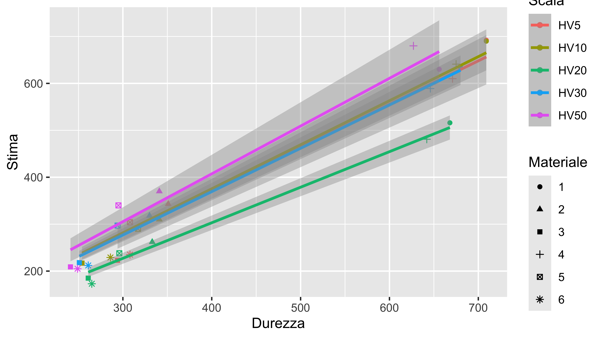Non tutte le bande di confidenza risultano sovrapposte, questo significa che la relazione tra durezza reale e stima dipende dalla scala scelta.
Analisi per taratura
Si effettua una ANOVA per verificare se la scala effettivamente sia un fattore che incide sul modello da regredire.
| term | df | sumsq | meansq | statistic | p.value |
|---|---|---|---|---|---|
| Hardness | 1 | 898983.79 | 898983.788 | 808.119815 | 0.0000000 |
| Scale | 4 | 34978.65 | 8744.662 | 7.860803 | 0.0003379 |
| Residuals | 24 | 26698.53 | 1112.439 | NA | NA |
Analisi per taratura
Al solito si verificano i residui del modello usato per l’analisi ANOVA. (assenza di pattern e normalità).
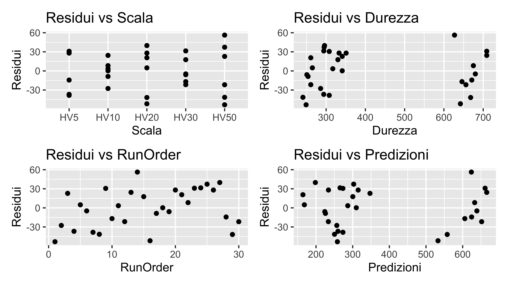Analisi per taratura
Shapiro-Wilk normality test
data: .
W = 0.95796, p-value = 0.2744Analisi per taratura
La anova appena condotta risulta quindi valida e suggerisce di effettuare una regressione distinta per ogni scala ricavando per ognuna il valore della pendenza:
| Scale | slope |
|---|---|
| HV5 | 0.9257687 |
| HV10 | 0.9385109 |
| HV20 | 0.7574335 |
| HV30 | 0.9235168 |
| HV50 | 1.0180241 |
Analisi per taratura
Per ogni scala di durezza si riportano i valori della pendenza, i valori dell’intervallo di confidenza al 95% sul valore della pendenza e il range massimo dei residui (che risulta abbastanza importante).
| Scale | Slope | Residual_min | Residual_max | CI_low | CI_high |
|---|---|---|---|---|---|
| HV5 | 0.9257687 | -50.13676 | 35.62998 | 0.8430079 | 1.0085296 |
| HV10 | 0.9385109 | -39.41411 | 24.59579 | 0.8853192 | 0.9917025 |
| HV20 | 0.7574335 | -27.71986 | 13.79970 | 0.7188855 | 0.7959814 |
| HV30 | 0.9235168 | -29.03789 | 25.48605 | 0.8772668 | 0.9697669 |
| HV50 | 1.0180241 | -48.48800 | 41.69889 | 0.9165342 | 1.1195141 |
Analisi per taratura
Va verificata come al solito l’assenza di pattern per i residui e la normalità degli stessi per il modello adottato.
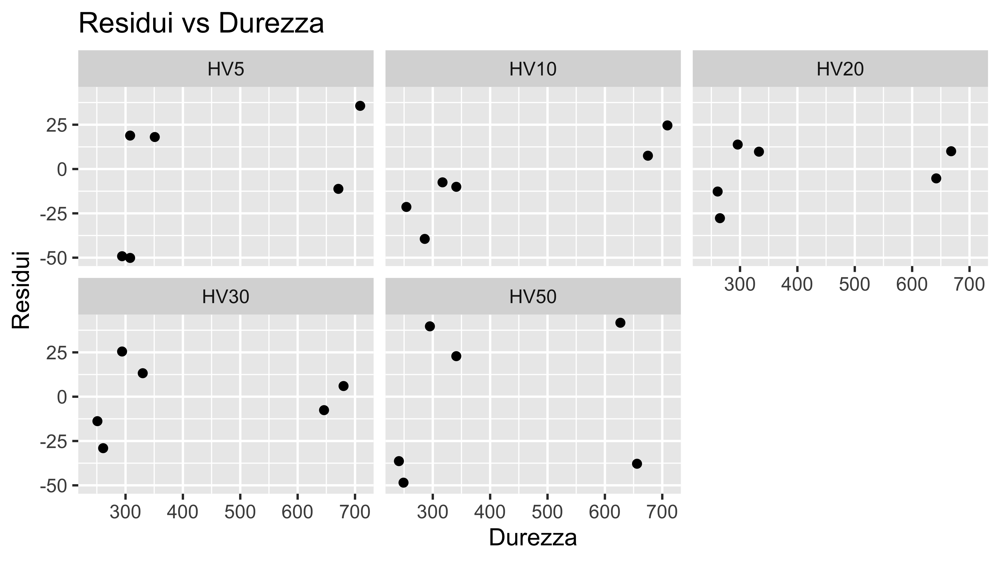Analisi per taratura

Analisi per taratura
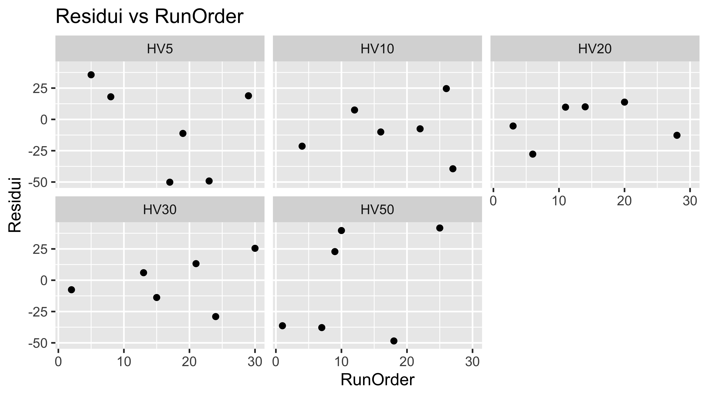Analisi per taratura
| Scale | p_value | W |
|---|---|---|
| HV5 | 0.2344047 | 0.8720269 |
| HV10 | 0.9902723 | 0.9904627 |
| HV20 | 0.3559777 | 0.8969083 |
| HV30 | 0.9824913 | 0.9875917 |
| HV50 | 0.0764722 | 0.8128614 |
Analisi per taratura
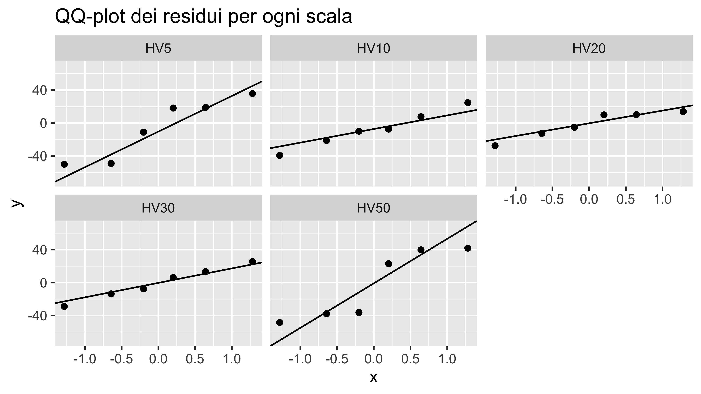Analisi per taratura
Conclusione
Il modello risulta valido. Quindi per le varie scale si possono assumere i valori della pendenza (slope) contenuti indf_slope.
| Scale | slope |
|---|---|
| HV5 | 0.9257687 |
| HV10 | 0.9385109 |
| HV20 | 0.7574335 |
| HV30 | 0.9235168 |
| HV50 | 1.0180241 |
Analisi per taratura
Si graficano le varie caratteristiche con il loro intervallo di confidenza
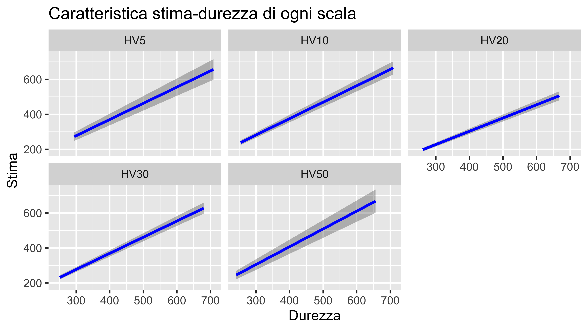